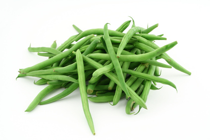

Green Beans (Phaseolus spp.)

Mating & Breeding System: The genus Phaseolus includes the common green bean, snap bean, pole bean, kidney bean, and haricot (all varieties of P. vulgaris), lima bean (P. lunatus), and scarlet and runner beans (varieties of P. coccineus). While some bean species are capable of self-pollination, many produce a higher yield if insects are allowed access to the flowers. Hand pollination experiments suggest that this is at least partly due to increased cross-pollination. In contrast, lima beans appear to be almost entirely self-pollinated, with pollination occurring inside the flower prior to opening. P. vulgaris varieties also self-pollinate prior to opening, but not all ovules are fertilized before the flower opens. This allows some cross-pollination to occur from later insect visits.
Some varieties of P. lunatus and P. vulgaris produce large quantities of concentrated nectar that are attractive to pollinators. The pollen does not seem especially palatable to most. Scarlet and runner beans are known to require insect pollination (typically by bees) to set a crop .
Pollination, Quality & Yield: Yield and seed quality of scarlet bean and runner bean is up to 10 x greater when insect pollinators are present, particularly large-bodied bumble bees and carpenter bees. Honey bees will visit the flowers, but they do not seem to actively collect pollen or facilitate cross-pollination. In P. vulgaris varieties, there can be a significant benefit from insect pollination. This is attributed to insects “tripping” of the flowers. Bumble bees are most proficient at this. Other species of Phaseolus, such as the liman bean(P. lunatus) are largely self-pollinated, and yield or quality are not significantly improved by adding pollinators.
Pollination Recommendations: Experiments with honey bees in field cages have shown that insect pollination occurs in beans. In P. coccineus, the best results were found when bumble bees had access to the flowers. The small increase seen in P. vulgaris and P. lunatus when bees are used to supplement cross-pollination suggests that this practice is probably not profitable for the grower. Further research on different pollinators would be useful, particularly for P. vulgaris.
References
Free, J.B. 1993. Insect Pollination of Crops, 2nd edition. Academic Press.
Ibarra-Perez, F.J., Barnhart, D., Ehdaie, B., Knio, K.M., & Waines, J.G. 1999. Effects of insect tripping on seed yield of common bean. Crop Science 39:428-433.
Labuda, H. 2010. Runner bean (Phaseolus coccineus L.) - biology and use. Acta Scientiarum Polonorum-Hortorum Cultus 9:117-132.